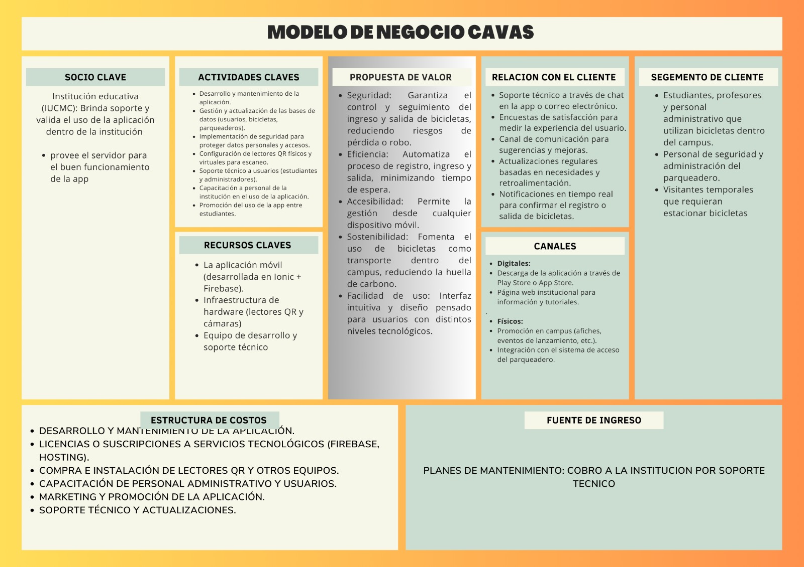

DEFINICION DE GESSION DE TECNOLOGIA
La Gestión de Tecnología se refiere al proceso de planificación, desarrollo, implementación, control y optimización de tecnologías dentro de una organización. Este proceso incluye la administración de los recursos tecnológicos, la identificación y evaluación de nuevas tecnologías, y la alineación de estas con los objetivos estratégicos de la empresa.
En la práctica, la gestión de tecnología abarca:
Innovación y Desarrollo: Supervisar la investigación y desarrollo (I+D) de nuevas tecnologías, así como la adopción de innovaciones tecnológicas que puedan proporcionar ventajas competitivas.
Planificación Tecnológica: Crear estrategias para la adquisición, implementación y uso de tecnologías, asegurando que estas apoyen los objetivos comerciales a largo plazo.
Implementación: Integrar tecnologías nuevas o mejoradas dentro de la estructura organizativa, garantizando una transición eficiente y minimizando las interrupciones.
Control y Monitoreo: Supervisar el rendimiento y el impacto de las tecnologías implementadas, haciendo ajustes según sea necesario para optimizar su uso.
Gestión del Ciclo de Vida: Administrar las tecnologías a lo largo de su ciclo de vida, desde la adquisición hasta el retiro, incluyendo el mantenimiento y la actualización.
CLASE DE TECNOLOGIA
se refiere a un sistema de clasificación utilizado para agrupar tecnologías similares o relacionadas según ciertas características, como su función, aplicación, o etapa de desarrollo. Esta clasificación facilita la organización, estudio,
y gestión de tecnologías dentro de una organización o campo específico.
Existen varias maneras de categorizar tecnologías, dependiendo del contexto:
Por Función o Aplicación:
Tecnologías de Información y Comunicación (TIC): Incluyen hardware, software, redes y otros componentes utilizados para procesar y comunicar información.
Tecnologías Médicas: Dispositivos, procedimientos, y sistemas que se utilizan en el diagnóstico, tratamiento, y prevención de enfermedades.
Tecnologías Industriales: Máquinas, herramientas y procesos utilizados en la fabricación y producción industrial.
Por Etapa de Desarrollo:
Tecnologías Emergentes: Innovaciones recientes que aún están en fase de desarrollo o prueba, como la inteligencia artificial avanzada, blockchain, o computación cuántica.
Tecnologías Maduras: Tecnologías establecidas y ampliamente adoptadas, como la electricidad, motores de combustión interna, o redes de telecomunicaciones.
Tecnologías Obsoletas: Tecnologías que han sido reemplazadas por soluciones más avanzadas y ya no se utilizan ampliamente, como los disquetes o los teléfonos analógicos.
Por Impacto o Uso:
Tecnologías Disruptivas: Aquellas que cambian drásticamente un mercado o industria, desplazando tecnologías anteriores y creando nuevos modelos de negocio.
Tecnologías Sostenibles: Tecnologías que promueven la eficiencia de recursos y la reducción del impacto ambiental, como las energías renovables o la eficiencia energética.
evolucion de tecnología
es un proceso continuo de desarrollo y cambio en las herramientas, técnicas, y sistemas utilizados por las
sociedades humanas para resolver problemas, mejorar la calidad de vida, y aumentar la eficiencia
en diversas actividades. Este proceso se ha acelerado con el tiempo,
impulsado por la acumulación de conocimiento, la innovación, y la interacción entre
diferentes disciplinas científicas y tecnológicas.
Hoja de ruta de gestión de tecnología TELLO
Referencia: Roadmap: Ingreso y Salidas de Bicicleta
FUNDAMENTOS DE METODOLOGÍA DE
PROCESO OBJETO
La medición y análisis de desempeño se centran en la implementación de métricas y herramientas que permiten evaluar cómo están
funcionando los procesos dentro de una organización. Esto implica la recolección sistemática de datos sobre diferentes aspectos de los procesos (como tiempo, costos, calidad, etc.),
y el uso de herramientas analíticas para interpretar esos datos.
Métricas: Pueden incluir indicadores clave de rendimiento (KPI) como el tiempo de ciclo, el costo por unidad, la tasa de error,
la satisfacción del cliente, entre otros.
Herramientas de Análisis: Herramientas como diagramas de Pareto, análisis de causa raíz, gráficos de control, entre otras,
se utilizan para identificar tendencias, anomalías y oportunidades de mejora.
El objetivo es proporcionar a la organización una visión clara del rendimiento actual de sus procesos, identificar áreas donde
existen ineficiencias o cuellos de botella, y ofrecer una base objetiva para la toma de decisiones sobre mejoras y optimizaciones
PATENTE Contenedores de Basura Inteligentes
1. Introducción
El Bote de Basura Inteligente es un sistema automatizado de reciclaje que permite a los usuarios depositar latas
de gaseosas y botellas de plástico en contenedores inteligentes, promoviendo la protección del medio ambiente.
El sistema no solo clasifica automáticamente el material depositado, sino que también recompensa al usuario
económicamente por cada aporte.
Esta iniciativa busca incentivar a las personas a reciclar más de manera constante, ayudando a reducir la
contaminación y fomentando un ciclo de reciclaje eficiente. El bote determinará el tipo de material ingresado
(plástico o aluminio) y asignará una remuneración acorde, con un valor mayor para el aluminio debido a su mayor
rentabilidad en el mercado de reciclaje.
2. Antecedentes de la Invención
El reciclaje ha sido un tema clave en la lucha contra la contaminación. Sin embargo, muchas personas no
participan activamente por la falta de incentivos inmediatos o la incomodidad de separar los residuos. Los
sistemas tradicionales de reciclaje requieren de participación manual, lo que reduce la eficacia del proceso.
La invención del Bote de Basura Inteligente introduce una manera automatizada de separar materiales y brinda una
recompensa monetaria para aumentar la participación ciudadana en el reciclaje, al mismo tiempo que facilita la
gestión de residuos de manera eficiente.
3. Problema Técnico que Resuelve la Invención
El principal problema técnico que resuelve esta invención es la clasificación automatizada de residuos
reciclables y la creación de un sistema que valore y premie económicamente el reciclaje.
Actualmente, el proceso de reciclaje implica la separación manual de los materiales, lo que requiere tiempo,
esfuerzo y conocimiento de los tipos de residuos. Este sistema automatiza la clasificación mediante el uso de
sensores que reconocen los materiales, eliminando la necesidad de separar los residuos manualmente. Además,
fomenta el reciclaje mediante la recompensa directa, lo que incentiva una mayor participación ciudadana.
4. Descripción Detallada de la Invención
El Bote de Basura Inteligente está equipado con varios componentes clave:
- Sensores de Material: Utiliza sensores infrarrojos y de densidad para determinar si el
objeto depositado es de plástico o aluminio.
- Sistema de Clasificación: Un sistema mecánico separa automáticamente los objetos en
diferentes compartimientos dependiendo de su material (plástico o aluminio).
- Módulo de Recompensa: Cada vez que se ingresa un objeto correctamente clasificado, el
sistema genera una remuneración basada en el material (una mayor para aluminio y otra menor para plástico).
Esta remuneración puede ser acumulada en una cuenta digital del usuario.
- Pantalla de Información: Un display muestra información al usuario sobre los objetos
ingresados, la recompensa generada y el estado de la cuenta.
- Conexión a Internet (opcional): El sistema puede estar conectado a internet para
sincronizar con una aplicación móvil que permita a los usuarios rastrear su historial de reciclaje y las
recompensas obtenidas.
- Fuente de Energía: El bote puede alimentarse con energía solar, contribuyendo aún más al
enfoque ecológico del proyecto.
5. Explicación de las Figuras o Dibujos (si los hay)
En caso de contar con diagramas o ilustraciones, estos son algunos ejemplos de las figuras que se podrían
incluir:
- Figura 1: Vista exterior del bote, mostrando la entrada para residuos y la pantalla de
información.
- Figura 2: Diagrama del interior del bote, con el sistema de sensores y compartimientos de
clasificación.
- Figura 3: Flujo del proceso desde la detección del material hasta la asignación de la
recompensa.
6. Ejemplo(s) de Realización de la Invención
Imagina un escenario en una ciudad donde se instalan varios Botes de Basura Inteligentes en áreas públicas como
parques, centros comerciales y estaciones de transporte. Una persona puede acercarse al bote con una botella de
plástico o una lata de gaseosa. El sistema detecta el tipo de material y clasifica la botella como plástico,
otorgando una pequeña recompensa que se almacena en una cuenta digital del usuario, accesible mediante una app
móvil. Si se introduce una lata de aluminio, el bote le otorga una mayor remuneración, motivando al usuario a
reciclar más latas en el futuro.
Eventualmente, el usuario podrá usar sus recompensas acumuladas para obtener descuentos en tiendas locales o
donarlas a causas ambientales.
modelo canvas
